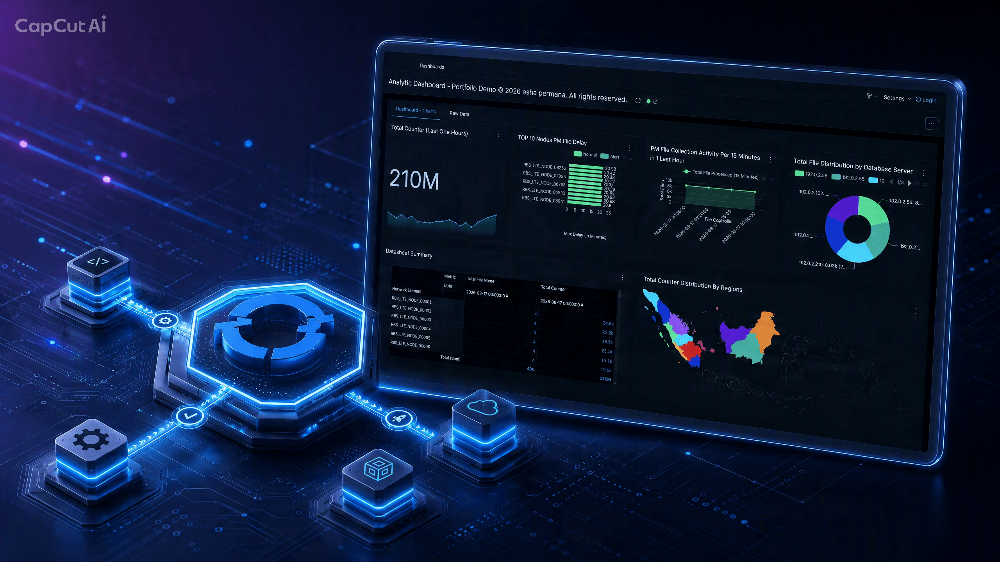

CI/CD
OpenShift Application Onboarding
Automated onboarding workflow from source repository to an application deployed on OpenShift.
OpenShiftHelmGitHub
INTEGRATION ENGINEER · CLOUD-NATIVE · PLATFORM ENGINEERING
I design and integrate cloud-native applications, automation workflows, and CI/CD pipelines using Kubernetes, Red Hat OpenShift, Helm, Tekton, GitHub Actions, and Python.
01 · ABOUT
I am an Integration Engineer specializing in telecom OSS and cloud-native technologies. My work combines application integration, automation, containerization, orchestration, and CI/CD.
My current focus is building practical engineering solutions around Kubernetes and Red Hat OpenShift, with an emphasis on repeatable application onboarding and automated deployment.
02 · FEATURED PROJECTS
FLAGSHIP PROJECT

🔗 Try the live dashboard yourself
Note: running on the free Red Hat Developer Sandbox — link available until the trial expires.
A cloud-native analytics application demonstrating automated application onboarding and deployment on Red Hat OpenShift.
CI/CD
Automated onboarding workflow from source repository to an application deployed on OpenShift.
PIPELINE
Event-driven pipeline execution using GitHub webhooks, Tekton Pipelines-as-Code, and OpenShift.
03 · ENGINEERING STACK
Kubernetes · Red Hat OpenShift · Helm · Docker / Podman
GitHub Actions · Tekton Pipelines · Pipelines-as-Code
Python · FastAPI · React · REST APIs
ClickHouse · PostgreSQL · Redis · Apache Superset
04 · CONTACT
Interested in cloud-native integration, platform engineering, or CI/CD automation?